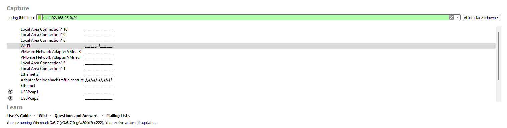

Network --> Capture Filters --> Caputer Engine --> Display Filters
Capture Filters
add new capture filter
[Capture] > [Capture Filters..]
[+]

Display Filters
tcp.port == 21
Following TCP Streams
view network traffic including the contents of each packet.